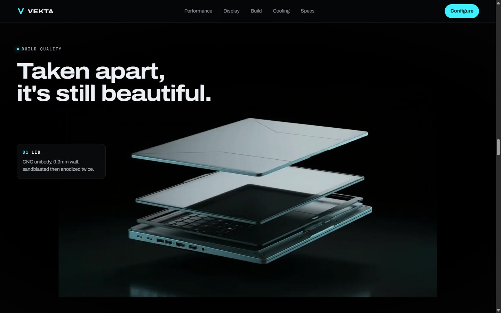
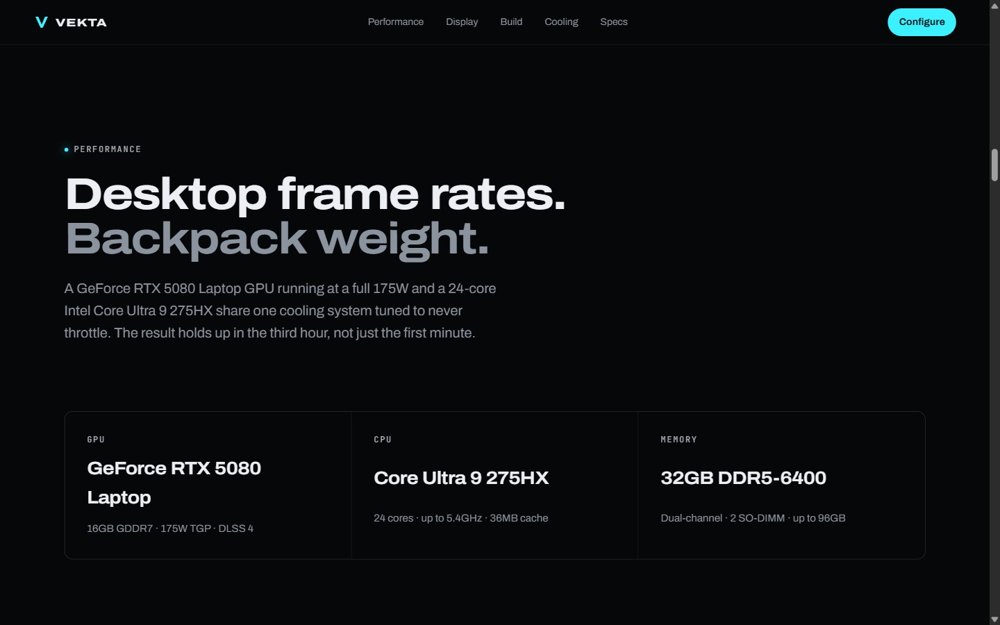

Overview
Video quality, scroll control.
Real-time 3D could not match the look of the rendered clips, and a plain video cannot be scrubbed smoothly in both directions. Splitting each clip into frames and drawing them on a canvas gives both.
Frame pipeline
From MP4 to scroll.
01Source clip
hero.mp4 or exploded.mp4
hero.mp4 or exploded.mp4
02npm run frames
ffmpeg-static extracts frames
ffmpeg-static extracts frames
03WebP sets
Full size and small, plus a manifest
Full size and small, plus a manifest
04Canvas
Draws the frame for the scroll position
Draws the frame for the scroll position
A trim setting in the extraction script cuts each clip to where the motion starts and ends, and the manifest tells the page how many frames to expect.
Page content
A full launch page around the motion.
Performance
Component cards and an FPS comparison chart against the previous generation.
Build
The exploded view with numbered callouts for the lid, vapor chamber, fans, and battery.
Keyboard
A colour picker. The colour you choose becomes the accent of the whole page.
Specs
Display, cooling, ports, and a full specification table.
Scope and limits
What is real here.
- VEKTA and Nightfall are fictional, made for a design showcase. The specifications and benchmark numbers are demo copy, not measurements.
- Product imagery and the source clips were generated with Google Flow.
Screenshots
Captured from a local run.

Scroll scrubs the laptop apart, layer by layer.

GPU, CPU, and memory cards.

The chosen colour recolours the page.
Next projectThe Box Ward: Puzzle and Strategy Lab